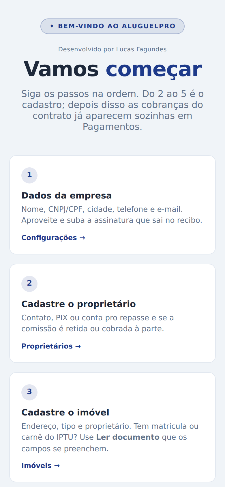
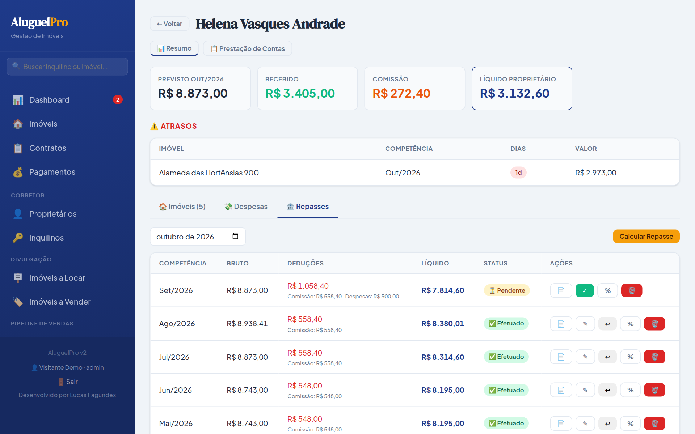
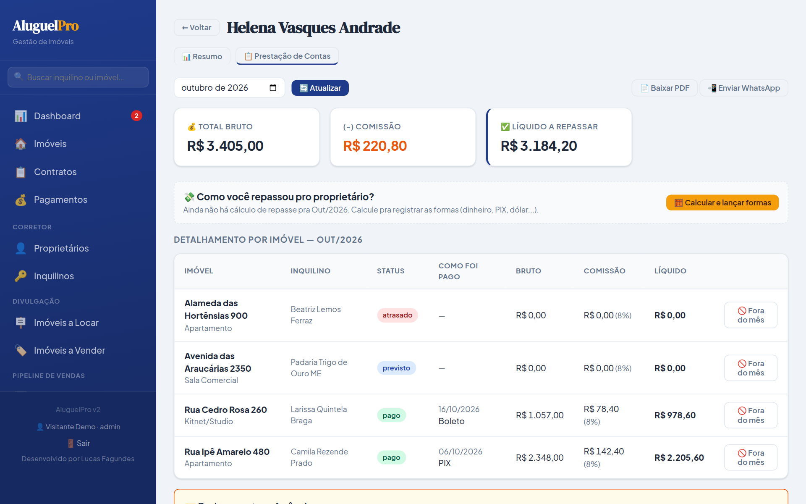

2. Primeiro acesso
No primeiro acesso abre a tela de boas-vindas, com os passos na ordem certa. Cada um tem o botão que leva direto pra tela:
- Dados da empresa: nome, CNPJ/CPF, cidade, telefone e e-mail, em Configurações.
- Proprietário: contato e PIX ou conta pro repasse.
- Imóvel: endereço, tipo e de quem é.
- Inquilino: pode ser por foto do RG/CNH.
- Contrato: valores e vencimento. As cobranças nascem aqui.
- Baixa e recibo: recebeu, dá baixa e manda o recibo.
- Repasse: calcula o líquido do dono e manda a prestação de contas.
- Instalar no celular: ícone na tela, igual aplicativo.
Depois toque em Ir pro sistema →. Dá pra rever esses passos quando quiser pela ❓ Ajuda do menu.

Boas-vindas no celular
📊 Dashboard
A tela inicial mostra o mês: previsto, recebido, atrasos, ocupação e o valor de mercado da carteira. Embaixo, quem está em atraso, o que vence em 7 dias e os reajustes e revisões que estão chegando. Filtre por proprietário e por mês.
3. Cadastrar proprietário, imóvel e inquilino
👤 Proprietário
Em Proprietários → + Novo Proprietário:
- Nome, CPF/CNPJ, telefone e e-mail.
- Dados para Repasse: PIX ou banco, agência e conta.
- Qualificação e endereço: RG, estado civil, profissão. Entram no texto do contrato.
- Comissão de administração: Retida (sai do repasse todo mês) ou A cobrar (o repasse vai cheio e a taxa fica como dívida).
🏠 Imóvel
Em Imóveis → + Novo Imóvel:
- Tem a matrícula, o carnê do IPTU ou a escritura? Toque em Ler documento que os campos se preenchem. Confira antes de salvar.
- Endereço, tipo, proprietário e finalidade (aluguel, venda ou ambos).
- Mais de um dono? + Adicionar proprietário, com a parte de cada um.
- Eu administro este imóvel vem marcado. Desmarque quando é só cadastro: aí não entra comissão nem repasse.
🔑 Inquilino
Em Inquilinos → + Novo Inquilino. Pra não digitar, envie fotos do RG/CNH e CPF em Preencher com foto dos documentos e toque em ✨ Ler documentos. O Nome é o que sai no recibo; a Referência é como você chama a pessoa. O telefone é o WhatsApp que recebe os recibos.
💡 IPTU, condomínio e lixo: dá pra pôr no contrato (valor mensal) ou no imóvel, por ano, no botão 📋 Encargos do card: você informa o total do ano e o sistema divide pelos meses. Com encargos do ano cadastrados, eles valem no lugar dos valores do contrato.
5. Recibos, reajuste e repasse
🧾 Recibos (botões na linha do pagamento)
| 📋 Recibo previsto | Pra entregar antes de receber. |
| 🧾 Recibo de pagamento | Depois da baixa. Sai em PDF, com a assinatura cadastrada em Configurações → Assinatura do Recibo. |
| 📲 WhatsApp | Abre o WhatsApp do inquilino com a mensagem pronta. Anexe o PDF do 🧾. |
| ↩ Desfazer | Volta a baixa, se lançou errado. |
📈 Reajuste anual
- Com o índice e o mês de aniversário no contrato, o reajuste aparece no Dashboard em Reajustes e revisões perto da data, já com o índice acumulado de 12 meses e o valor sugerido.
- Abra, confira o percentual ou o valor novo e a data em que passa a valer, e toque em Aplicar. As cobranças em aberto a partir dessa data já saem com o valor novo.
- Índice negativo: a sugestão é manter o valor. Também dá pra registrar Sem reajuste este ano.
Revisão de 3 anos: o sistema avisa 60 dias antes. Combine o valor e registre como Revisão / acordo: o prazo recomeça.
🏦 Repasse ao proprietário
- Em Proprietários, toque em Ver resumo →.
- Aba 🏦 Repasses: escolha o mês e toque em Calcular Repasse. Sai o bruto, as deduções (comissão, despesas, descontos, o que o inquilino pagou direto ao dono) e o líquido.
- Transferiu? Toque em ✓ e informe a data e a forma. O 📄 baixa o demonstrativo em PDF.

Resumo do proprietário: repasses do mês
📋 Prestação de contas
Na aba Prestação de Contas do proprietário, escolha o mês e use 📄 Baixar PDF ou 📲 Enviar WhatsApp. Mostra cada imóvel, o que entrou, a comissão, as despesas e o líquido. Despesa do dono (conserto, taxa) se lança na aba 💸 Despesas.

Prestação de contas do mês
6. Dúvidas mais comuns
Preciso criar a cobrança todo mês?Não. As cobranças nascem com o contrato, para toda a vigência. Você só dá a baixa.
Mudei o valor no contrato. As cobranças mudam?Mudam as que estão em aberto. As já pagas ficam como foram. Pra reajuste anual, use o 📈 da lista de contratos, que guarda o histórico.
Não acho o imóvel ao criar o contrato.A lista mostra só imóveis vagos. Se ainda há contrato ativo nele, encerre o antigo primeiro (✕ na lista de contratos).
Como encerro um contrato?No ✕ da lista. As cobranças futuras em aberto são canceladas, o histórico fica e o imóvel volta a Vago. Se houver mês vencido sem pagamento, o sistema pergunta se mantém pra cobrar.
O inquilino quer pagar vários meses adiantado.Marque os meses em Pagamentos e use ⏩ Antecipar com desconto. Cada mês recebe a sua baixa.
O inquilino pagou direto pro proprietário.Na baixa, escolha Depósito direto ao proprietário ou PIX direto ao proprietário. No repasse, esse valor já aparece como pago ao dono.
Dá pra fazer o contrato escrito e assinar online?Dá. Em Contratos Redigidos, o texto sai com imóvel, valores e as partes. Cada parte recebe um link, confirma com um código e assina pelo celular.
E vistoria, seguro e anúncio?Tem telas próprias no menu: Vistorias (fotos por cômodo, com IA), Apólices de Seguro (com aviso de vencimento) e Imóveis a Locar (anúncio com link público).
Mais gente pode usar?Pode. Em Configurações → Usuários do Sistema: Viewer só vê, Editor mexe nos dados e Admin faz tudo, inclusive usuários.
Meu teste grátis acabou. Perco os dados?Não. Ficam guardados por 30 dias. Assinando, está tudo lá. Sem fidelidade.
Onde acho ajuda dentro do sistema?No menu, ❓ Ajuda: tem busca (ex.: "recibo", "reajuste", "IPTU") e o botão de falar com o suporte.
💬 Suporte: WhatsApp (45) 99107-7788, ou pelo botão Falar com o suporte na Ajuda.
Desenvolvido por Lucas Fagundes · Luqsys